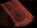

Texterkennung
Texterkennung ist ein Gebiet, auf dem es unter Linux noch vergleichsweise wenige "eigene" Entwicklungen gibt. Synonym wird der Begriff "OCR" verwendet, "Optical Character Recognition", was streng genommen nur einen Teil, nämlich die Zeichenerkennung, beinhaltet. Die Erkennung wird besser, wenn neben den Zeichen auch Wörter abgeglichen werden, was aber mit einen wesentlich höheren Aufwand für die Programmentwicklung einhergeht (z.B. tesseract-ocr). Neben "klassischen" Open-Source-Projekten, die größtenteils von wenigen, teilweise nur einem einzigen, Hauptentwicklern erstellt wurden (gocr  , Ocrad etc.) stehen Weiterentwicklungen von ehemals kommerziell gestarteten, und später z.T. in open-source-Lizenz überführten Projekte wie Cuneiform-Linux und tesseract-ocr oder OCRopus, das zunächst u.a. auf tesseract-ocr basierte. Daneben existiert das zwar kommerziell entwickelte, aber ebenfalls unter freier Lizenz stehende Archivista
, Ocrad etc.) stehen Weiterentwicklungen von ehemals kommerziell gestarteten, und später z.T. in open-source-Lizenz überführten Projekte wie Cuneiform-Linux und tesseract-ocr oder OCRopus, das zunächst u.a. auf tesseract-ocr basierte. Daneben existiert das zwar kommerziell entwickelte, aber ebenfalls unter freier Lizenz stehende Archivista  , das eine Komplettlösung für das "papierlose" Büro bietet, und von der Entwicklerfirma auch als Komplettlösung mit entsprechender Hardware vertrieben wird.
, das eine Komplettlösung für das "papierlose" Büro bietet, und von der Entwicklerfirma auch als Komplettlösung mit entsprechender Hardware vertrieben wird.
Während für reine Zeichenerkennung schon recht gute Ergebnisse erzielt werden können, sind die Layout-Analyse und Schriftarten-/Größenerkennung unter Linux noch nicht allzu weit fortgeschritten. Der entwickungstechnische Aufwand ist insgesamt anscheinend recht hoch; bei rein kommerziellen Anwendungen spiegelt sich das in den verlangten Preisen für die Programme wieder. Projekte wie tesseract-ocr oder OCRopus werden von Google aus eigenen Interessen (z.B. Erstellung von "e-books") gefördert und teilfinanziert.
Vorbereitung¶
Um exakte Ergebnisse erzielen zu können, müssen die verwendeten Vorlagen in einem guten Zustand sein oder gebracht werden. Dazu können die mit Scannern bzw. Scanner/Software erstellten Bilddateien bereinigt, gerade ausgerichtet, im Kontrast verbessert etc. werden.
Scan Tailor¶
Scan Tailor ist Programm, mit dem Scans bearbeitet werden können, um z.B. bessere Ergebnisse bei einer anschließenden Texterkennung zu erzielen, oder sie für die Archivierung zu optimieren. So können u.a. Seiten aufgeteilt, gerade gezogen und unerwünschte Ränder entfernt werden. Die Bearbeitung kann automatisiert erfolgen, es lassen sich aber auch umfangreiche manuelle Einstellungen für verschiedene Aufgaben vornehmen.
unpaper¶
unpaper ist ein mächtiges Kommandozeilenprogramm zur Nachbearbeitung von fotokopierten/gescannten Bild- und Textvorlagen. Es wurde für die automatische Stapelverarbeitung von großen Datenmengen konzipiert (z.B. E-Books). Hauptziel der Entwicklung war es, für den Bildschirm besser lesbare PDF-Dokumente erstellen zu können, unpaper kann aber z.B. zur Vorbereitung von Texterkennung, Digitalisieren, Konservieren und Archivieren von gescannten Vorlagen verwendet werden.
convert¶
convert ist Teil der Softwaresammlung ImageMagick, das zur Verbesserung von gescannten Dokumenten eingesetzt werden kann. Ein Anwendungsbeispiel wird im Wiki-Artikel unter Gescannte Dokumente nachbessern beschrieben.
ExactImage¶
ExactImage ist eine Sammlung von Kommandozeilen-Werkzeugen zur Bearbeitung von Grafik-Dateien. Interessant ist dabei die Bearbeitungsgeschwindigkeit; einige Konvertieroptionen werden - verglichen mit ImageMagick - in bis zu 20facher Geschwindigkeit durchgeführt. Das Programm eignet sich somit auch für "schwachbrüstige" Rechner. Es werden etliche Werkzeuge bereitgestellt, die gerade für die Texterkennung benötigt werden, hier insbesondere das Programm optimize2bw.
OCR-Programme für die Kommandozeile¶
Die eigentliche Erkennung erfolgt in der Regel mit Kommandozeilenwerkzeugen, die von sich aus meist nur sehr wenige Bildformate verarbeiten können. Dazu existieren oft sogenannte "Frontends" mit grafischer Benutzeroberfläche, die meist auch in der Lage sind, die Daten in das vom eigentlichen OCR-Programm benötigte Format zu konvertieren. Z.T. sind auch Scan-Programme mit integriert, sodass die komplette Verarbeitung vom Erstellen der Vorlagen über die Bearbeitung bis zur Texterkennung und Ausgabe erfolgen kann.
Cuneiform-Linux¶
 Cuneiform-Linux ist ein sehr ausgereiftes Kommandozeilenprogramm zur Texterkennung/OCR unter Ubuntu. Es lässt sich mittels eines Skriptes in XSane einbinden, und dient als OCR-Grundlage für YAGF. Cuneiform kann sehr viele Formate verarbeiten und die Ergebnisse in verschiedenen Formaten ausgeben.
tesseract-ocr¶
tesseract-ocr ist ein ehemals kommerziell von Hewlett-Packard entwickeltes Texterkennungsprogramm, das (von Google unterstützt) unter Open-Source-Lizenz weiterentwickelt wird. Es handelt sich um ein Kommandozeilenprogramm, das zunächst nur .tif-Dateien verarbeiten konnte, inzwischen aber fast alle Bildformate beherrscht. Die Texterkennungsqualität ist mit der von Cuneiform-Linux vergleichbar; Spalten- und teilweise auch Layouterkennung ist ab 3.0.x möglich; es liefert reine Textdateien oder hOCR-Dateien als Ausgabe. Auch für tesseract-ocr gibt es eine Einbindung für XSane, sowie "frontends", die die Bedienung vereinfachen. Außerdem kann tesseract-ocr für (fast) jede beliebige Sprache/Schrift "angelernt" werden.
Ocrad¶
Ocrad ist ein Kommandozeilenwerkzeug zur Texterkennung, das seit 2004 von Antonio Diaz Diaz entwickelt wird. Dabei handelt es sich um ein reines Zeichenerkennungsprogramm, das sprachenunabhängig arbeitet. Unterstützt werden nativ pnm-Dateien, also pbm (schwarz-weiß), pgm (Graustufen) oder ppm (Farbe). Es verfügt über eine Layout-Erkennung, um Spalten oder Textblöcke verarbeiten zu können. Viele OCR-Frontends können Ocrad einsetzen (z.B. XSane, ocrodjvu, OCRFeeder, xsane2djvu).
GOCR¶
GOCR ist ein Kommandozeilenwerkzeug zur Texterkennung, das seit 2000 von Joerg Schulenburg  / entwickelt wird. Das Programm ist "trainierbar" und vielfältig zu konfigurieren; gute Ergebnisse werden vor allem für serifenlose Schriften erzielt. Dabei handelt es sich um ein reines Zeichenerkennungsprogramm, das sprachen-unabhängig arbeitet. Mit GOCR tcl existiert auch eine grafische Benutzeroberfläche, die allerdings nicht ganz auf dem aktuellen Stand ist. Standardmäßig verwendet XSane GOCR als Texterkennungsprogramm, mit OcrGui können einige der Optionen in einer grafischen Oberfläche verwendet werden. Viele OCR-Frontends können GOCR einsetzen (z.B. ocrodjvu, OCRFeeder, gscan2pdf).
/ entwickelt wird. Das Programm ist "trainierbar" und vielfältig zu konfigurieren; gute Ergebnisse werden vor allem für serifenlose Schriften erzielt. Dabei handelt es sich um ein reines Zeichenerkennungsprogramm, das sprachen-unabhängig arbeitet. Mit GOCR tcl existiert auch eine grafische Benutzeroberfläche, die allerdings nicht ganz auf dem aktuellen Stand ist. Standardmäßig verwendet XSane GOCR als Texterkennungsprogramm, mit OcrGui können einige der Optionen in einer grafischen Oberfläche verwendet werden. Viele OCR-Frontends können GOCR einsetzen (z.B. ocrodjvu, OCRFeeder, gscan2pdf).
ocre¶
ocre ist eine Kommandozeilenwerkzeug zur Texterkennung. Es wird von Luis José Cearra Zabala unter GPL-Lizenz entwickelt. ocre verarbeitet pgm/pbm-Daten (in Graustufen), Ausgabe erfolgt in Unicode oder ISO 8859. Das Programm ist quasi ein "Forschungsprojekt", das seit 2000/01 stetig weiterentwickelt wird.
ocrodjvu¶
ocrodjvu ist eine Kommandozeilenwerkzeug zum Erstellen einer versteckten Textlage für DjVu-Daten, das auf DjVuLibre fußt. Dazu können die Programme OCRopus oder Cuneiform-Linux für die eigentliche Texterkennung genutzt werden ab Version 0.7.0 auch GOCR, tesseract-ocr und Ocrad. Der Wrapper, verfasst in Python, ist eine Neuentwicklung, er kommt u.a. in xsane2djvu zum Einsatz.
OCR-Programme mit grafischer Oberfläche¶
| Vergleich grafischer OCR-Programme | ||||||||
| Programm | apt-get | .pdf- Import | OCR-Engine | SANE | Bemerkung | |||
| Ocrad | GOCR | Tesseract | Cuneiform | |||||
| YAGF | Ja | Ja | Nein | Nein | Ja | Ja | Ja | Rechtschreibprüfung (Aspell) |
| cuneiform-qt | Nein | ? | Nein | Nein | Nein | Ja | ? | ? |
| vietOCR | Nein | ? | Nein | Nein | Ja | Nein | Bedingt | ? |
| gImageReader | Nein | Ja | Nein | Nein | Ja | Nein | Ja | ? |
| OcrGui | Nein | Nein | Nein | Ja | Ja | Nein | Nein | Rechtschreibprüfung (Hunspell) |
| OCRFeeder | Ja | Ja | Ja | Ja | Ja | Ja | Ja | Ausgabe als .html, .pdf, .odf oder .txt. |
| Paperwork | Nein | Nein | Nein | Nein | Ja | Ja | Ja | ? |
| Tesseract-GUI | Nein | Nein | Nein | Nein | Ja | Nein | Nein | Bildvorbereitung mit ImageMagick (Kontrast, Drehung etc.) |
| CellWriter | Ja | - | Nein | Nein | Nein | Nein | - | handschriftliche Eingaben Buchstaben umwandeln |
YAGF (Cuneiform/Tesseract)¶
YAGF ist ein grafisches Frontend zur Texterkennung/OCR für Cuneiform-Linux und/oder Tesseract, das es ermöglicht, Bilddateien und PDFs zu verarbeiten, oder Seiten direkt aus dem Programm heraus über XSane einzuscannen.
cuneiform-qt (Cuneiform)¶
cuneiform-qt ist eine einfaches grafisches Frontend zu Texterkenneung für Cuneiform-Linux, mit dem existierende Bild-Dateien (Formate PNG, JPG, BMP und TIF) ausgelesen werden können.
vietOCR (Tesseract)¶
vietOCR ist ein ursprünglich für vietnamesische Sprachunterstützung konzipiertes Java grafisches Frontend für tesseract-ocr, dessen grundlegenden Funktionen aber mit jeder installierten tesseract-ocr-Sprache verwendet werden können. Inzwischen ist auch die Verwendung eines SANE-fähigen Scanner möglich, allerdings nicht auf 64-bit-Systemen.
gImageReader (Tesseract)¶
gImageReader ist ein einfach zu bedienendes grafisches Frontend für das OCR-Programm tesseract-ocr (Versionen 2.0x und 3.0x werden unterstützt). Es ist in Python verfasst und ermöglicht die Texterkennung aus vorliegenden Bilddateien (es sind alle gängigen Formate verwendbar, auch PDF-Dateien), sowie den direkten Import über einen SANE-fähigen Scanner.
OcrGui (Tesseract/GOCR)¶
OcrGui ist ein Programm, mit dem in einer grafischen Oberfläche aus Bildvorlagen eine Texterkennung erzeugt werden kann. Zum Einsatz kommen dazu tesseract-ocr oder GOCR; außerdem kann das Ergebnis mit Hunspell einer Rechtschreibprüfung unterzogen werden.
OCRFeeder (Ocrad/GOCR/Tesseract/Cuneiform)¶
OCRFeeder ist ein Programm mit einer grafischen Oberfläche zur Texterkennung und Layout-Analyse, mit der als Bilddatei vorliegende Text-Dokumente weiterverarbeitet, und auch mit Bildern versehen und angepasstem Layout/Schriftbild abgespeichert werden können. Die Vorlagen können mit unpaper vorbereitet werden, als OCR-Engines können verschieden Programme zum Einsatz kommen (bereits vorgesehen sind Ocrad, GOCR, tesseract-ocr, inzwischen auch Cuneiform-Linux). Die Ausgabe kann im .odt-Format (OpenOffice.org/LibreOffice), oder als HTML-Dokument erfolgen.
Paperwork (Tesseract/Cuneiform)¶
Paperwork ist ein Programm zur Digitalisierung, Indexierung und Archivierung von Dokumenten aller Art. Die Vorlagen werden eingescannt oder vorhandene Bilddateien importiert. Mittels tesseract-ocr oder Cuneiform-Linux werden sie mit einer durchsuchbaren Textebene versehen, die Seitenausrichtung wird dabei automatisch erkannt und die Seite ggf. aufrecht gedreht. Das Programm bietet ein automatisches Indexierungs- und Suchsystem, das alle erkannten Wörter beinhaltet.
Tesseract-GUI (Tesseract)¶
Tesseract-GUI ist ein grafische Oberfläche, um Bildvorlagen mittels ImageMagick vorzubereiten (z.B. Drehen, Beschneiden, den Kontrast anpassen) und dann mit tesseract-ocr eine Texterkennung durchzuführen. Das Programm beherrscht Stapelverabeitungsroutinen für große Mengen von Vorlagen, die nach gleichen Vorgaben vorbereitet und deren Textausgaben automatisch durchnummeriert und neu benannt werden können. Außerdem kann daraus ein zusammenhängender Text erstellt werden.
CellWriter¶
CellWriter ist ein Programm, welches handschriftliche Eingaben in einem in Zellen aufgeteilten Eingabebereich in Buchstaben und Zeichenketten umwandelt. Beim Schreiben mit einem Grafiktablett oder anderen Eingabegeräten wird der geschriebene Text Buchstabe für Buchstabe aufgenommen. Der so eingegebene Text kann dann bestätigt und an das gerade aktive Eingabefeld einer Anwendung gesendet werden, als hätte man den Text mit der Tastatur geschrieben. CellWriter nimmt bei den OCR-Programmen eine Sonderstellung ein, da kein "Bilder" sondern direkte Eingaben ausgelesen werden.
PDF-XChange Editor¶
Der PDF-XChange Editor kann unter Wine PDF-Dateien per OCR mit einer Textebene versehen.
Dokumenterstellung¶
Um aus den "erkannten" Vorlagen dann Dokumente zu erstellen, gibt es weitere Programme, mit denen die Texterkennung mit dem Bild zusammenbringen können. Mit xsane2djvu ist das in einem Aufwasch für DjVu-Dateien möglich, das schon genannte OCRFeeder ermöglichte eine Ausgabe im .odt-Format (OpenOffice.org/LibreOffice). Auch gscan2pdf ermöglicht eine Dokumenterstellung mit Texterkennung.
XSane¶
 Auch das Scanprogramm XSane kann zur Texterkennung verwendet werden. Standardmäßig ist das nicht gerade zuverlässige GOCR als OCR-Engine vorgesehen, aber es existieren die Skripte xsane2tess (zur Verwendung von tesseract-ocr) und xsane2cunei (desgleichen mit Cuneiform-Linux). Vorteil hier ist, dass die Vorarbeiten/Einstellungen für die Vorlagen direkt in XSane vorgenommen werden können. Weiterhin lassen sich nach dem selben Muster mit xsane2djvu vollwertige DjVu-Dokumente mit Texterkennung erstellen, mit xsane2speech können Bildvorlagen direkt in Text umgewandelt und akustisch ausgegeben und als .mp3-Datei gespeichert werden. Außerdem besteht mit xsane2sandwich die Möglichkeit, (auch mehrseitige) PDF-Dateien mit integrierter Textlage zu erstellen und bestehende zu erweitern.
Auch das Scanprogramm XSane kann zur Texterkennung verwendet werden. Standardmäßig ist das nicht gerade zuverlässige GOCR als OCR-Engine vorgesehen, aber es existieren die Skripte xsane2tess (zur Verwendung von tesseract-ocr) und xsane2cunei (desgleichen mit Cuneiform-Linux). Vorteil hier ist, dass die Vorarbeiten/Einstellungen für die Vorlagen direkt in XSane vorgenommen werden können. Weiterhin lassen sich nach dem selben Muster mit xsane2djvu vollwertige DjVu-Dokumente mit Texterkennung erstellen, mit xsane2speech können Bildvorlagen direkt in Text umgewandelt und akustisch ausgegeben und als .mp3-Datei gespeichert werden. Außerdem besteht mit xsane2sandwich die Möglichkeit, (auch mehrseitige) PDF-Dateien mit integrierter Textlage zu erstellen und bestehende zu erweitern.
gscan2pdf¶
gscan2pdf ist ein Programm, das die Erstellung von Dokumenten aus gescannten Vorlagen erleichtern soll. Ähnlich wie bei einem Kopierer kann man Seite für Seite einscannen und dann als PDF, DjVu- oder TIFF abspeichern. Es können gleich unpaper, sowie eine Texterkennung (GOCR, tesseract-ocr, inzwischen auch ocropus, cuneiform) verwendet werden.
pct-scanner-script¶
pct-scanner-script ist ein reines Kommandozeilenwerkzeug, um zu Archivierungszwecken PDF oder DjVu-Dateien zu erstellen. Das Programm ist recht vielseitig konfigurierbar, ebenso ist eine Erstellung einer Textebene für DjVu-Dokumente möglich. Es verwendet scanadf aus dem sane-Paket, sowie einige PDF-und DjVu-Werkzeuge.
OCRmyPDF¶
OCRmyPDF ist ein Kommandozeilenprogramm, um für eingescannte PDF-Dateien eine durchsuchbare Textebene zu erstellen. Das Resultat wird PDF/A1-b-Format abgespeichert. Für die Texterkennung kommt Tesseract zum Einsatz.
pdfsandwich¶
| Quelle |
{kind=link}
pdfsandwich ist ein Kommandozeilenwerkzeug zum Erstellen von durchsuchbaren PDF-Dateien. Dafür wird die gescannte PDF-Vorlage mit convert aus ImageMagick in eine oder mehrere .bmp3-Dateien überführt und aus diesen mit tesseract-ocr jeweils eine Texterkennung im hOCR-Format erstellt. Die OCR-Dateien und die PDF-Vorlagen werden mittels hocr2pdf als "unsichtbare" Schicht zusammengeführt, und schließlich mit Ghostscript zu einer zusammenhängenden PDF-Datei weiterverarbeitet.
pdfocr¶
pdfocr ist ein Programm, das es ermöglicht, aus gescannten PDF-Vorlagen durchsuchbare Dokumente zu machen. Das in Ruby verfasste Skript greift dabei zur Texterkennung auf das OCR-Programm Cuneiform-Linux zurück (inzwischen existiert auch eine Version für tesseract-ocr) und verwendet zur Zusammenführung des Originals mit der Texterkennung hocr2pdf aus ExactImage.
hOCR2pdf¶
Mit hOCR2pdf, einem von ExactCODE entwickelten Werkzeug, Teil von ExactImage, lassen sich aus gescannten Vorlagen "durchsuchbare" PDF-Dateien erstellen, in dem die Texterkennung und das Bild "übereinander" gelegt werden. Bei exakter Passung wird das in der Texterkennungsebene gefundene Wort in der Bildebene angezeigt. Voraussetzung ist allerdings eine relativ stimmige Layouterkennung bzw. einfach nachzubildendes Layout der Bildvorlage. Tesseract (und theoretisch auch Cuneiform-Linux) können entsprechende hOCR-Dateien erstellen, in Paperwork kommen ebenfalls modifizierte hOCR-Dateien zum Einsatz. Eine Anleitung findet sich in einem Blog-Beitrag auf auxnet.de .
Weitere Projekte¶
Open Source¶
OCRopus ist ein noch in der Entwicklung (derzeit Version 1.3.3, Dezember 2017) befindliches groß angelegtes Projekt, das wie tesseract-ocr von Google gefördert wird. Es basierte z.T. auf tesseract-ocr und soll eine vollständige Open-Source-basierte Anwendung zur Texterkennung und -verarbeitung mit u.a. Layouterkennung und Handschriften-Analyse werden.
Archivista
ist eine ausgereifte, kommerziell entwickelte, aber unter Open-Source-Lizenz stehende Komplettlösung zum "papierlosen" Büro. Es verwendet sowohl Tesseract als auch cuneiform zur Texterkennung.
Links¶
Optical Character Recognition auf Wikipedia
Fotografieren statt Scannen
, Anleitung, Bücher mit SLR-Kamera zu "archivieren"hocr2pdf-Anleitung für Ubuntu 14.04 und später (aktualisiert)
Vergleich cuneiform - tesseract
im Linux-Magazin 03/2009 (veraltet)Online-Service
, mit dem kostenlos Texterkennungen durchgeführt werden können, Ausgabe in PDF oder DjVu möglich
- Erstellt mit Inyoka
-
 2004 – 2017 ubuntuusers.de • Einige Rechte vorbehalten
2004 – 2017 ubuntuusers.de • Einige Rechte vorbehalten
Lizenz • Kontakt • Datenschutz • Impressum • Serverstatus -
Serverhousing gespendet von